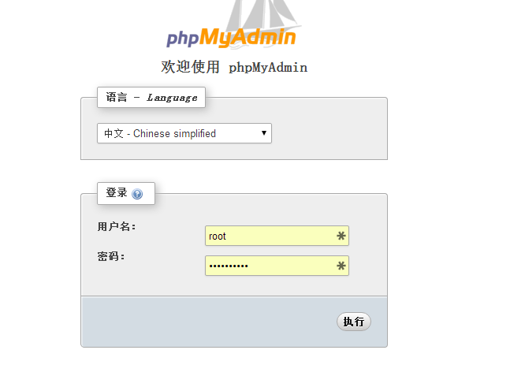
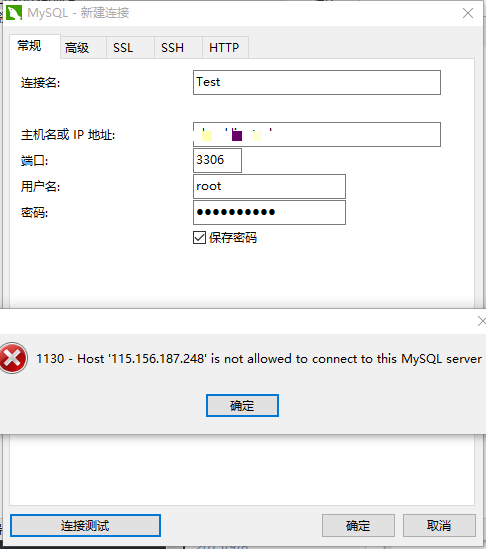
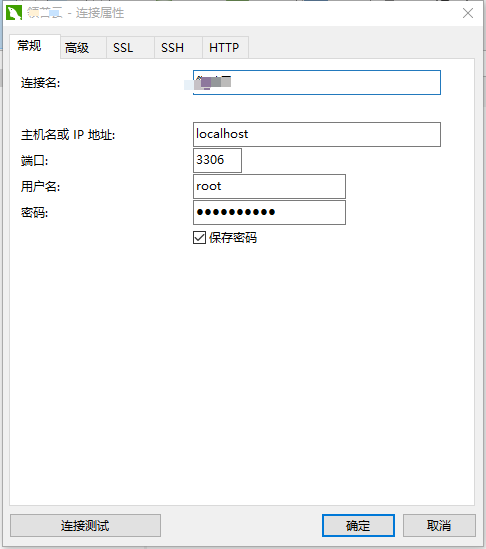
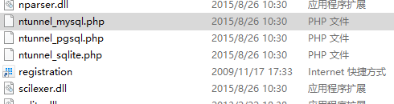
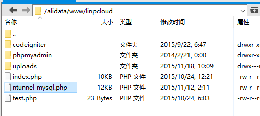
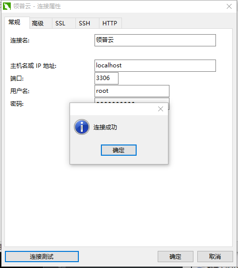

mysql无法远程连接的解决方法
在阿里云服务器上安装好MySQL后，首先想到的就是安装一款工具来管理数据库，一开始选择了phpMyAdmin，这个工具安装很简单，只要解压到能访问的目录下就行了。在浏览器中访问phpMyAdmin目录就行了，输入用户名和密码就能进入管理数据库了。

但是每次打开浏览器来管理数据库还是不太方便，所以最终选择了Navicat软件来管理数据库，在新建连接时，输入正确的主机、用户名和密码，连接测试时弹出如下错误。

原因是MySQL默认不支持远程连接,（那么phpMyAdmin为什么可以连接呢？那是因为phpMyadmin的环境是上传到服务器的，其本身访问数据库是相当于本机localhost访问的），如果想远程访问，可以使用下面的方法来解决。
远程连接mysql数据库时出现如下提示信息：“MYSQL CONNECT ERROR – 1130:Host ’202.43..’ is not allowed to connect to this MySQL server”
在创建mysql账户时，限制连接账户远程登录。也就是说，除了当前mysql所在的安装服务器外，其他的ip（主机）都是不允许访问的，即使你的用户名和密码是正确的。这时候就要修改用户的访问权限。
首先是用root用户登录到mysql的安装主机，然后进入mysql：
mysql -u root -p
root是mysql的最高授权用户名，这时会提示你输入密码，正确输入密码后回车，进入mysql。回车
然后输入如下命令：
grant all on 数据库名.* to ‘数据库账户名’@’%’ identified by ‘密码’ with grant option;
回车
flush privileges;
回车
注意：上面的单引号不能省，数据库名. 表示要开放的数据库下所有表，如果该连接的所有数据库都要开放，可以用 .* 代替。
‘数据库账户名’@’%’ 这里表示要开放的账户，百分号表示在任何主机都允许访问。
如果以上两步均显示 “Query OK, 0 rows affected (0.00 sec)”，那么说明命令已经成功执行，现在就可以远程连接你的mysql数据库了。
(1).如果想赋予所有操作的权限
grant all on … to 用户名……
(2).如果想赋予操作所有数据库的所有表的权限
grant … on . to 用户名……
(3).如果想赋予某个数据库的所有表
grant … on 数据库名称.’‘ to 用户名…… ([ ]两边一定要加单引号)
(4).如果想赋予某个数据库的某张表
grant … on 数据库名称.表名 to 用户名……
(5).如果想任何客户端都能通过该用户名远程访问
grant … on … to 用户名@% ……. (要把IP地址改成[ % ])
(6).改完了以后一定要重新启动MySQL服务
用户会存到Mysql服务器上的user表中，所以下面的两种方法都可以解决这个问题：
1。 改表法。可能是你的帐号不允许从远程登陆，只能在localhost。这个时候只要在localhost的那台电脑，登入mysql后，更改 “mysql” 数据库里的 “user” 表里的 “host” 项，从”localhost”改称”%”
mysql -u root -p
mysql>use mysql;
mysql>update user set host = ’%’ where user = ’root’;mysql>select host, user from user;
mysql>flush privileges;
\2. 授权法。例如，你想myuser使用mypassword从任何主机连接到mysql服务器的话。
GRANT ALL PRIVILEGES ON . TO ’myuser’@’%’ IDENTIFIED BY ’mypassword’ WITH GRANT OPTION;
如果你想允许用户myuser从ip为192.168.1.3的主机连接到mysql服务器，并使用mypassword作为密码
GRANT ALL PRIVILEGES ON . TO ’myuser’@’192.168.1.3’ IDENTIFIED BY ’mypassword’ WITH GRANT OPTION;
如果还是无法远程我们可参考
1、Mysql的端口是否正确，通过netstat -ntlp查看端口占用情况，一般情况下端口是3306。在用工具连接MySQl是要用到端口。例如My AdminMy Query BrowserMySQl Front等。
2、检查用户权限是否正确。
例如：用户Tester,user表里有两条记录：host分别为localhost和%(为了安全，%可以换成你需要外部连接的IP)。
3、查看/etc/my.cnf中,skip-networking 是否已被注掉,需要注掉。
报错：ERROR 2003 (HY000): Can’t connect to MySQL server on ‘192.168.51.112’ (111)
4、查看iptables是否停掉,没关的情况下,无法连接。
通过：service iptables stop临时关闭。
报错：ERROR 2003 (HY000): Can’t connect to MySQL server on ‘192.168.51.112’ (113)
另外，我们还可以通过配置http通道来使Navicat远程连接到数据库，这样做的好处是不需要前面繁杂的配置。在主机名ＩＰ地址那里填写LocalHost
用户名与密码一栏则填写你所在的数据库用户名与密码。
这时候还不能连接数据库的，需要通过Http通道的形式进行数据库连接。
点击连接属性标签栏中的Http，如下图所示：

勾选使用Http通道后，在通道地址一栏输入你的网址与后台文件地址。
例如：http://host/ntunnel_mysql.php

这里说明一下通道地址，前半部份：http://host/是指你的服务器的域名，后半部份：ntunnel_mysql.php是指NaviCat客户端后台连接地址。这里ntunnel_mysql.php可以根据你自己的喜好去重命名。那么，这个ntunnel_mysql.php文件在哪里找呢？
这个ntunnel_mysql.php文件在你点击确定保存了连接信息后，会自动生成一个php文件于NaviCat的文件根目录下，，如下图所示：

使用Ftp工具将该文件上传到能通道地址目录就行了。

现在连接测试就能成功了。


...
...
Copyright 2021 sunfy.top ALL Rights Reserved